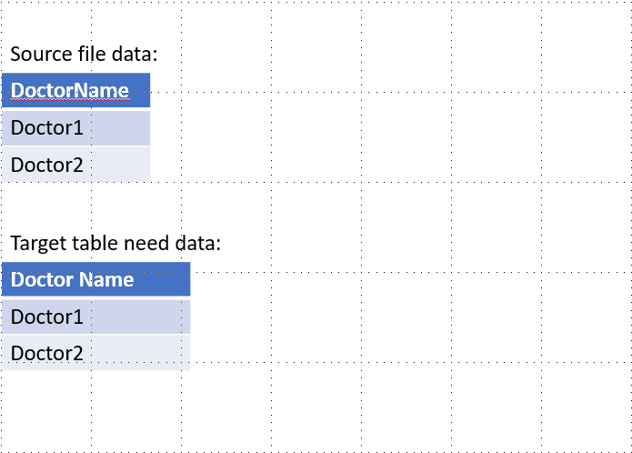
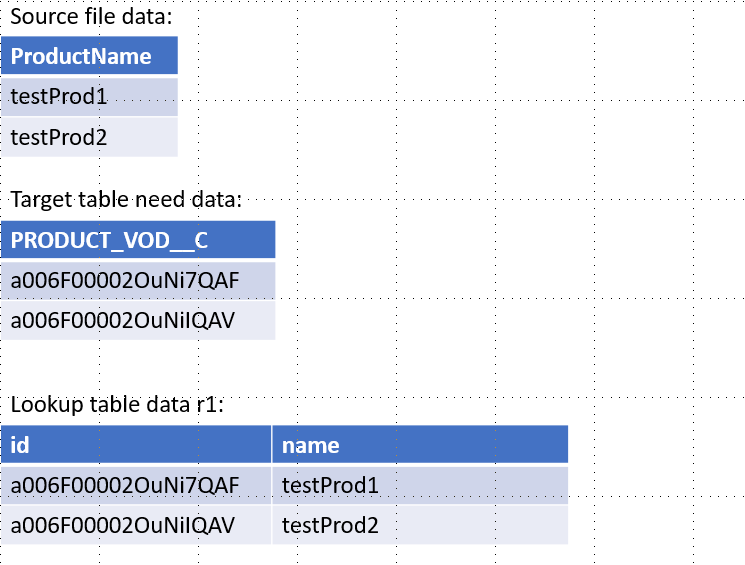
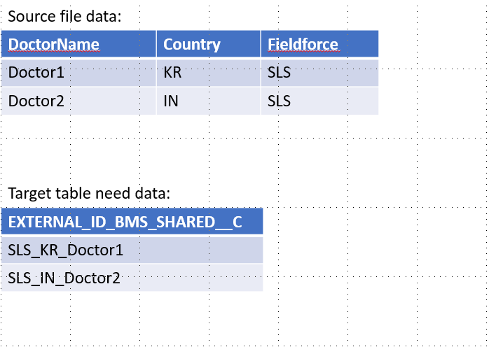
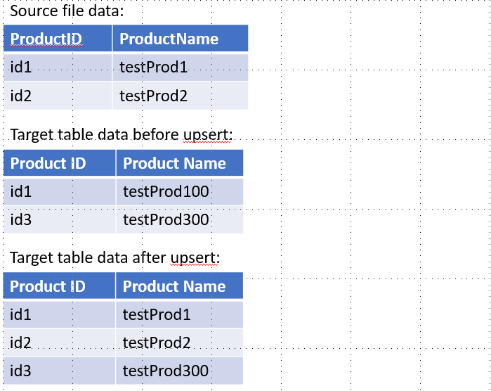
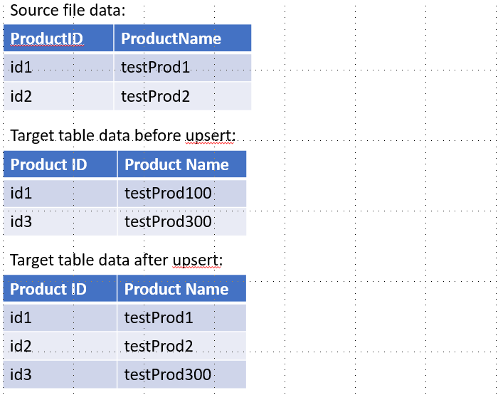
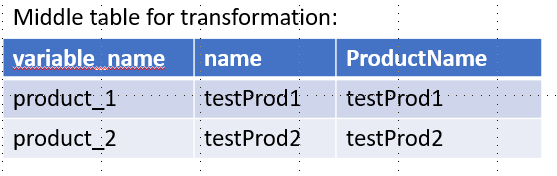

iLoad¶
A python based data loader for differenct target
Contents
Five scenario in iLoad data process can be used for transformation
- Direct
- Lookup
- Function
- Key upsert
- Variable
- Direct

For direct data loading, the target data is
same as the data in source file.
- Lookup

For lookup data loading, the target data is
replaced by a transformation rule like:
src.ProductName = r1.name
- Function

For function data loading, the target data is
replaced by a transformation rule like:
src.Fieldforce||’’_’’||src.Country||’’_’’||src.DoctorName
- Key upsert

For key upsert data loading, it can set up a
field as key in iLoad, if not set up a key,
iLoad will only do insert operation
- Variable
 
If a function field need a source field not
in source file, but it can be transformed by
another rule, it can set up a variable for
that.
Such as:
A. Target field External ID need country join
product external ID
B. But source file only have product name
C. So set up a variable with lookup rule
src.ProductName = r1.name
D. Then use this variable in function rule
src.Country||’’_’’||variable_name
Other key functions
1. It can load data to single table immediately
2. It can load data to single table scheduled
3. After configurate single table template, it can set up
a multiple table sequence for scheduled data loading
4. It can review scheduled single or multiple tasks